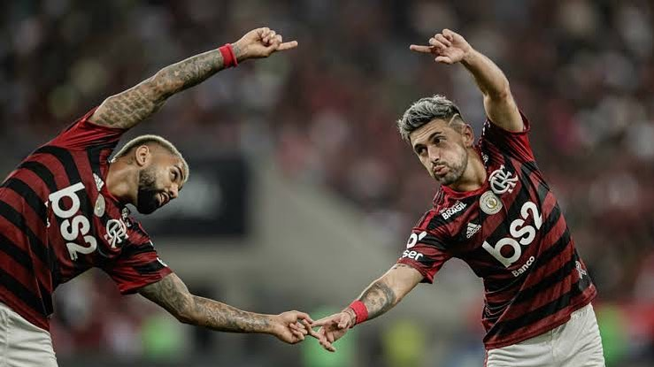

Com a vitória sobre o América-MG por 2 a 0, o Flamengo engata uma sequência de quatro jogos sem tomar gols e 15 partidas invicto. Destaque do duelo, o zagueiro Rodrigo Caio é o convidado de hoje do Resenha do Craque. Ele comentou sobre a fase do elenco e os melhores lances da partida ao lado do apresentador João Mércio. Confira!
Transmissão de jogos ao VIVO do Flamengo

Foto de capa Fusão Fla